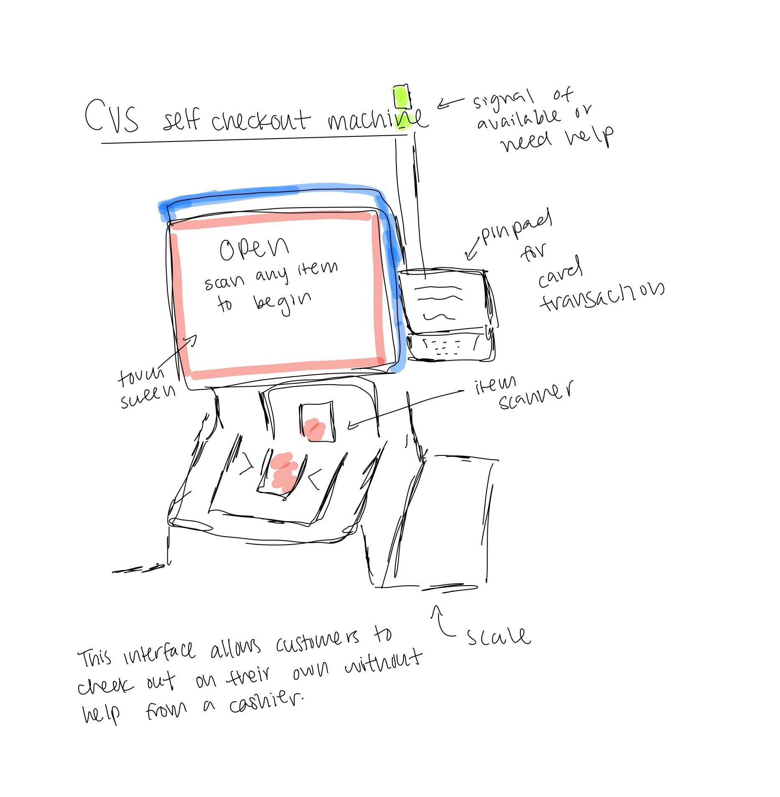
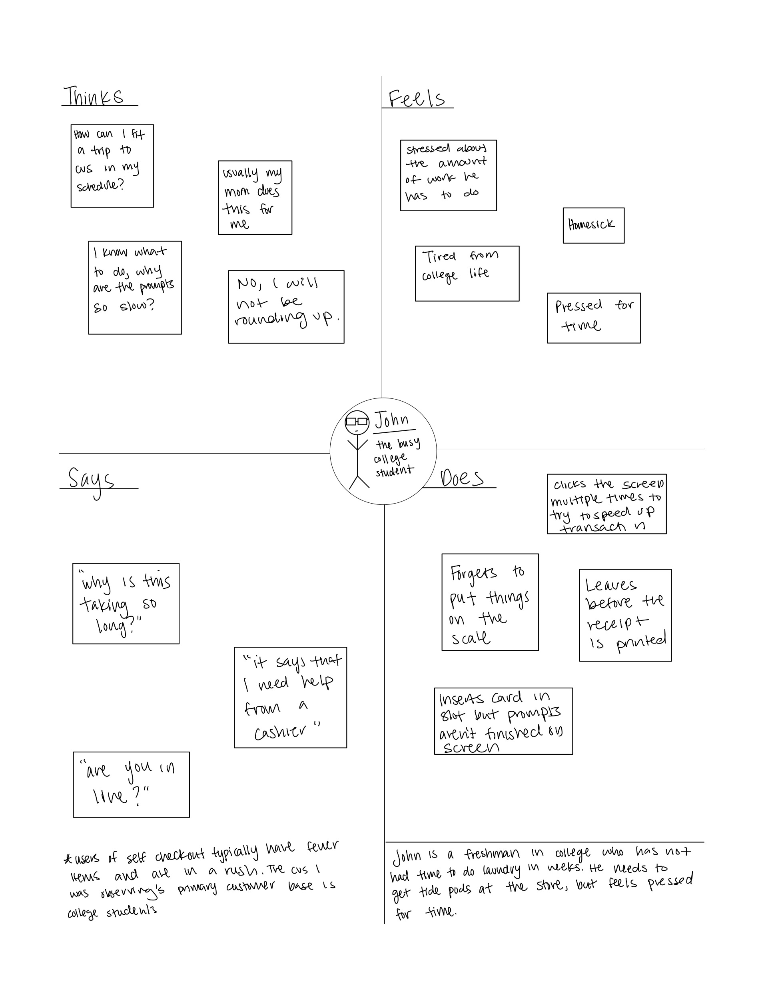

Creating Personas & Storyboardng with the CVS Self Checkout Interface
Background Information
I was tasked with selecting an accessible interface in public view, and observng how real users interact with the interface. After getting a sense of user experience with the interace I then created personas based on users. From one of my personas I was able to create a storyboard illustrating the user's journey.
The interface that I chose was the self checkout machine at CVS, so I was able to examine CVS customers and their interactions with the self check out machines.
Interface Sketch

Summary of Observations:
Each user went through the self checkout process relatively quickly and smoothly. Oftentimes, a user would click for the next step before the machine was able to finish saying the previous instruction, and there were some instances of users putting their cards in the slot before the machine prompted them to. A few of the users paused before setting things down on the scale or didn’t put things on the scale at all, delaying the process. Overall it was a pretty seamless sequence of tapping on the screen and scanning new items.
Interview Questions
- How often do you use this self check out over regular checkout?
- When you are using the self checkout are there any challenges you have?
- How would you describe your past and current current experience with self checkout? Has it gotten easier to use?
- How do you normally shop and pay for groceries?
- Is there anything you look for when using self checkout that is missing or hard to find?
- Is there any way self checkout isn’t supporting your needs currently?
- If you had a question when using the self checkout do you know who to contact?
- What is your first reaction when you approach the self check out machine?
- How long does it typically take you to checkout/grocery shop?
Interview Summary
- Users choose self checkout when they have less things, when they have more things they go to the cashier
- Some users would like to use cash when paying for items, and think that the lights around the side of the machine is a misleading color. The light is blue, but some suggest it should be green to show “validation”
- Both users and cashiers believe that there should be more clear signage as to which side the scale is on
- Users find it easy to get help as the lights above the self checkout inform workers that customer has run into an issue
- Overall users report that the interace is relatively easy to use and self explanatory
Personas


Storyboarding